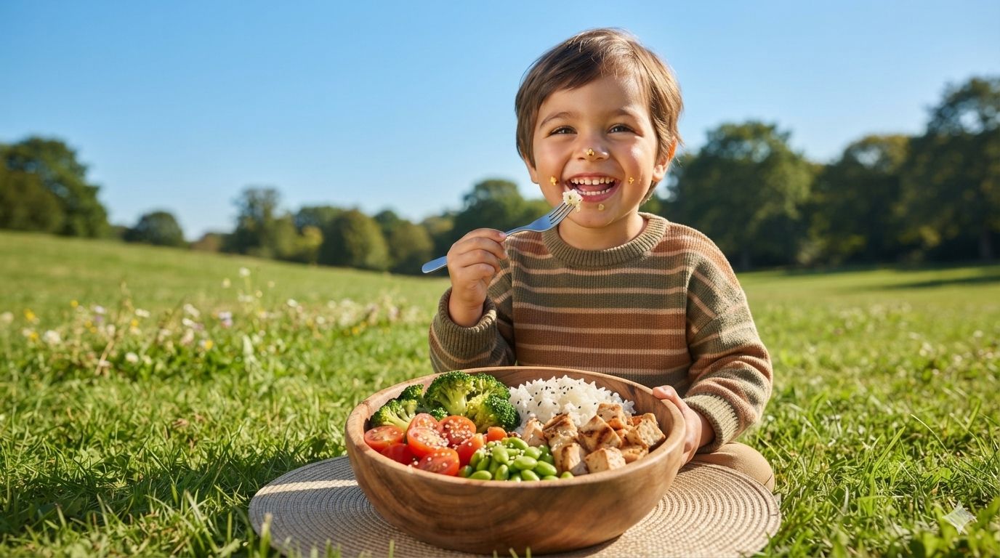
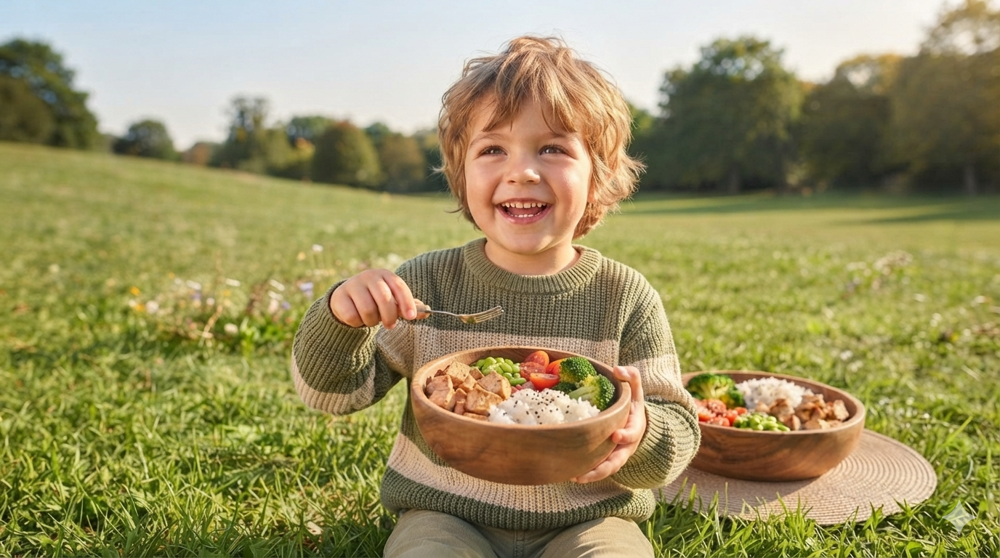

Myahealth lahir dari satu kegelisahan sederhana: banyak orang makan sembarangan tanpa sadar dampaknya bagi tubuh, sementara info gizi yang benar susah diakses. Kami membangun jembatan antara teknologi dan pola makan sehat sehari-hari.
Setiap foto makanan yang di-scan, setiap kondisi kesehatan yang dipilih, dan setiap progress harian yang dicatat, semuanya terekam jadi perjalanan sehat yang bisa kamu pantau kapan saja.

Scan Jenis Makanan Kamu
Kenali kandungan gula, kalori, dan gizi dari makananmu secara instan hanya lewat foto. Pantau asupan harianmu dengan cepat dan akurat untuk wujudkan pola makan sehat.

Banyaknya Masyarakat Indonesia
Kesulitan Menjaga Pola Makan Sehat
Mari Bersama
Jaga Kesehatan Kita
Myahealth membantu kamu memahami apa yang kamu makan setiap hari, memberi rekomendasi berbasis data, dan mendampingi progress hidup sehatmu selangkah demi selangkah.
Setiap foto makanan yang di-scan, setiap kondisi kesehatan yang dipilih, dan setiap progress harian yang dicatat, semuanya terekam jadi perjalanan sehat yang bisa kamu pantau kapan saja.
150+
Makanan Berhasil
Dianalisis
20+
Rekomendasi
Resep Sehat
80K
Pengguna Aktif
di Website ini
4.5
Rating Website
Myahealthy